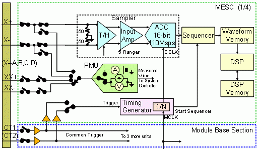
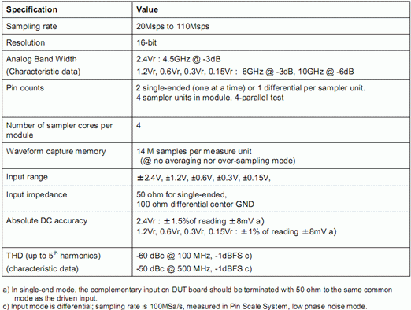
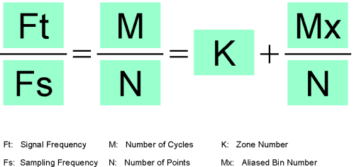
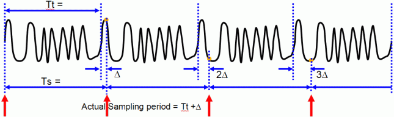
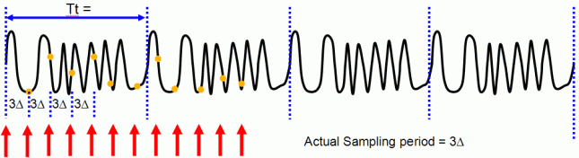
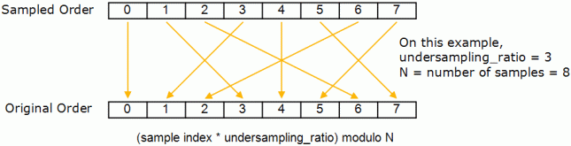
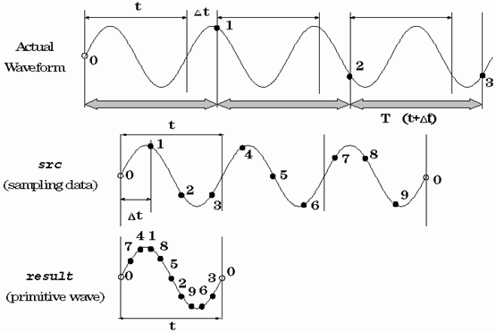
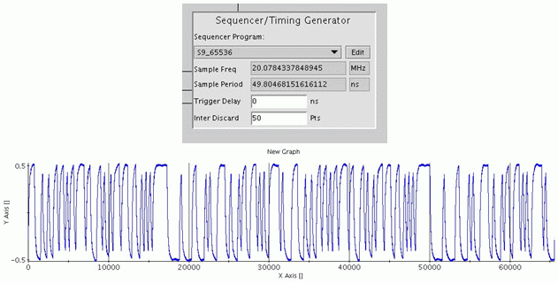
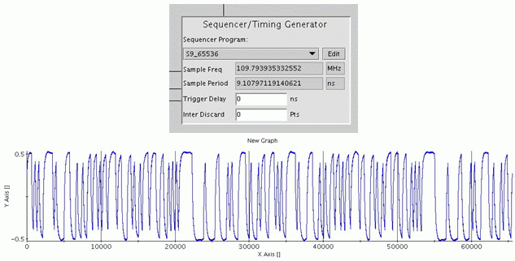

Optimize Sampling Rate for HSIO PRBS Waveform Analysis with 6G Sampler
Wei-Min ZHANG, Verigy
Paper ID: 120138 April 2010
Abstract
Digitizer is used for normal waveform capture following "Nyquist Theory", but sampler works differently comparing with digitizer. There is no anti-aliasing filter in sampler, we need follow under-sampling coherent condition. For high speed PRBS waveform capture by sampler has special challenge to test time due to data stream length is long. In this paper, we discuss a special under-sampling coherent condition when K=0, which can achieve higher sampling rate and thus reduce waveform capturing time dramatically. For example, 100Mbps PRBS7 data stream theoretical capture time from 166.46 ms reduce to 0.597 ms, and this method also make capture the PRBS23 data stream became possible. We also setup the experiments on V93000 to demo the advantage of the method. Both theoretical and actual capture time show very good improvement. Fully utilizing hardware advantage can help reduce the test time and also achieve better result.
Key Words: Optimize, HSIO, Waveform Analysis, Sampler
Introduction
Most high speed interface designs have embedded DFT circuit. For example, SerDes cores offer BIST functions with a PRBS (Pseudo Random Bit Sequence) pattern generator in the Serializer and a corresponding pattern checker in the De-serializer. Based on PRBS generator, it is easy for ATE to do at-speed functional test. It also provides the flexibility for sampler to capture waveform and analyze it.
Besides test solution based on high speed cards like PinScale 3600 and Pin Scale HX, V93000 SOC test system also provides 6G sampler[1] for high speed test. The 6G sampler block diagram and spec are shown in Figure 1 and Figure 2.

Figure 1 6G sampler block diagram

Figure 2 6G sampler spec
Digitizer is used for normal waveform capture following "Nyquist Theory", but sampler works differently comparing with digitizer. There is no anti-aliasing filter in sampler, we need follow under-sampling condition. The coherent condition shown in Figure 3 is the key consideration for a successful measurement in the DSP-based testing [2].

Figure 3 under-sampling coherent condition [2]
If K=1 and Mx=1, then Ts = Tt + Tt/N. The under-sampling condition can be shown in Figure 4. In this case, Δ = Tt/N, and the sampled points should be in the same order as the original waveform.

Figure 4 Under-sampling coherent condition, Effective sampling rate = 1/Δ
Challenges to Capturing HSIO PRBS Waveform with Sampler
In above under-sampling condition, Ts = Tt + Δ, the effective sampling period is Δ. The concept is easy to understand. But when K=1, the sampling period Ts is always close to Tt, as Δ is a very small value. When Tt is large, the sampling rate will be quite slow.
For high speed PRBS application, Tt is determined by PRBS data stream length multiplying bit interval time. For example, the data stream length is 2^7-1=127 in PRBS7 and 2^15-1=32767 in PRBS15 respectively. When data rate is 2.5G, the PRBS7 Tt = 50.8 ns (Ft = 19.685 MHz), and PRBS15 Tt = 13.1068 us (Ft = 76.296 KHz), both are quite slow repeating signals. When K=1, the sampling rate would be also very slow. [Note: When the sampling rate is below 20Msps (lower limit of 6G sampler), we can use inter-discard algorithm to slow down the actual sampling rate.]
The challenge is, the PRBS waveform capturing process will take long time (especially on PRBS15). To optimize the test time, we discuss a different method here. When higher under-sampling rate is available to capture such a signal, we actually can select K=0, then Ts = Mx * Tt / N = Mx * Δ, which means we capture Tt / (Mx * Δ) points during one Tt period. For example, K = 0, Mx = 3, the capture concept can be shown in Figure 5. The actual sampling period = 3 Δ, and we capture more than one point during one Tt period.

Figure 5 Under-sampling with K=0, Mx=3, Effective sampling rate = 1/Δ
For the special case of K = 0, we can introduce the new factor undersampling_ratio to present Mx to make it easier to understand.
Ts= Mx*Tt/N = Mx*Δ = undersampling_ratio * Δ
(undersampling_ratio and the number of sampling points must be relatively prime)
In this method, it is easy to understand that the order of sampled points is different from original waveform order. Shuffling algorithm is needed to restore the original waveform. A mapping between the order of sampled points and the original waveform order can be shown in Figure 6.

Figure 6 Mapping between Sampled order and original order
On V93000, we can use DSP_SHUFFLE API to shuffle the waveform, this API puts coherent sampling data into phase order to give a primitive wave, the description of this algorithm shown in Figure 7.

Figure 7 DSP_SHUFFLE description on V93000 document [3]
With this method, we can always select the sampling rate close to upper limit of 6G sampler(110Msps). When we try to get the same sample points, the capturing time can be significantly reduced.
Verigy V93000 6G sampler has wide sampling rate range from 20Msps to 110Msps. Comparing this spec with many similar instruments which have maximum sampling rate of 20Msps or 50Msps, we have the advantage of higher sampling rate. We can utilize this to reduce waveform capturing time by optimizing sampling method in application development.
HSIO PRBS Waveform Capture Case Study
PRBS7 Waveform Capture Time Optimization
PRBS7 waveform analysis is a common request in HSIO test. There is a very comprehensive description in Digital ApEx Library [4] on how to use 6G sampler to test PRBS7 waveform. Please refer to that document for detail setup and analysis process. We will focus on the sampling rate discussion in this section.
When there is PRBS7 data stream and data rate = 100Mbps. For eye diagram analysis, we need capture 254-UI window waveform and then create a eye diagram with 2-UI.
Select K=1 and Mx=1
Tt = 10*254 = 2.54 usec
Ft = 1/Tt = 0.393700787401575 MHz.
Number of sampling points N=65536, ~258 points/bit
Fs = 0.39369478009597 MHz = 20.0784337848945 MHz / 51
Please note the Fs is lower than the minimum sampling rate(20Msps) of the sampler, we need to set up Fs = 20.0784337848945 MHz with the number of inter-discard is 51 to achieve the required sampling rate.
Theoretical capture time = 65536/0.393700787401575 = 166.46 ms.
We setup online experiment with this test condition and captured the waveform with 6000 points initial-discard. Please notice the result:
Theoretical capture time = (65536+6000)/0.393700787401575 = 181.70 ms
Actual capture time = 184.81 ms
Experiment result is shown in Figure 8.

Figure 8 Captured waveform, actual capture time = 184.81 ms
We can try the new method to fully utilize the high sampling rate close to 110Msps.
When K=0, Mx (undersampling_ratio) = 235
Fs = Ft*N/Mx= 109.793935332552 MHz
Theoretical capture time = 65536/109.793935332552 = 0.597 ms
With 6000 init-discard in the experiment,
Theoretical capture time = (65536+6000)/109.793935332552 = 0.65 ms
Actual capture time = 2.72 ms
The experiment result is shown in Figure 9.

Figure 9 Reordered waveform, Actual capture time = 2.72 ms
These two experiments show the capture time has been significantly reduced (184 ms -> 2.72 ms).
We also do the analysis on 2.5Gbps PRBS7 signal.
When K=1, Mx=1
Tt = 400ps*254 = 0.1016 usec
Ft = 1/Tt = 9.84251985039369MHz.
Number of sampling points N=65536, ~258 points/bit
Fs = 9.842369502399256MHz = 29.527108507197767MHz / 3
Theoretical capture time = 65536/9.842369502399256MHz= 6.659 ms.
When K=0, Mx (undersampling_ratio) = 5859, then
Fs = Ft*N/Mx = 109.972684711428 MHz,
Theoretical capture time = 65536/109.972684711428 MHz = 0.596 ms.
Even for high speed signal capture at 2.5Gbps, the method can still reduce capturing time significantly.
PRBS15 waveform capture time analysis
In another example when data rate is 2.5Gbps and PRBS15 data stream is 32767 bits. For eye diagram analysis, we need capture 65534-UI window waveform.
When K=1, Mx=1
Ft = 1/(400ps*65534)= 38.1481368449965 KHz
Setup N = 65536*16=1048576, ~ 16 point/bit
Fs = 38.1481004641329 KHz
Theoretical capture time = 1048576/38.1481004641329 KHz = 27.49 sec
(Impossible on production)
With the new method, when K=0, Mx (undersampling_ratio) = 365, then
Fs = 109.59238559008 MHz
Theoretical capture time = 1048576/109.59238559008 MHz = 9.57 ms
The capture time still is reasonable and testable on production.
Best Practices for Optimizing Waveform Capture
To optimize waveform capturing time, besides applying the new method mentioned above, we still need to pay attention to the execution of the sampler.
- Use
TM::WAIT_DGTflag inWAIT_TEST_DONEAPI to stop the pattern execution when sampler finishes sampling action.START_TEST(); WAIT_TEST_DONE(dTout,&iTOF, TM::WAIT_DGT); if (iTOF) cout <<"Time out!"<<endl;
- Use
DSP_SHUFFLEaPI correctlyDSP_SHUFFLE(ARRAY_I& src, ARRAY_I& result, INT rel_freq);
We can use this API for waveform re-order, example like this,
INT undersampling_ratio = 5859; DSP_SHUFFLE(Captured_Waveform, Waveform, undersampling_ratio);
Please note this API only supports coherent sampling. For parameter rel_freq, the number of wave cycles used for coherent sampling, size and rel_freq must be relatively prime and DSP_SHUFFLE support the waveform size should be less than 1048576. In case the waveform size cannot apply this API, for example, the following code can be used to re-order the waveform.
long long index;
long long undersampling_ratio = 2911;
long long sample_number;
For(long long i=0;i<sample_number;i++)
{
Waveform[(index * undersampling_ratio)% sample_number] = Captured_Waveform[i];
}Please note, when this sampler_number is a large number (for example, 1048576), and also big cycle_number (for example, PRBS15 32767 cycles), sampler_number * cycle_number will exceed the 32 bits integer limit, you should use 64 bits integer definition - long long to avoid the problem, as the example shown on above.
And for high speed waveform eye diagram analysis, we even need call DSP_SHUFFLE for two times, one for undersampling_ratio, another one for overlapping the waveform to 2UI. Actually we can even do this at one time, this also improve the throughput.
long long index;
long long undersampling_ratio = 2911;
long long sample_number;
long long cycle_number = 32767;
For(long long i=0;i<sample_number;i++)
{
EyeDiagram[(i* Bit_Cycle)% sample_number] =
Captured_Waveform[(index * undersampling_ratio)% sample_number]
}Conclusion
Capturing high speed PRBS waveform with under-sampling condition has special challenge to test time. In this paper, we discuss a special under-sampling coherent condition when K=0, which can achieve higher sampling rate and thus reduce waveform capturing time. We also setup the experiments to demo the advantage of the method. Both theoretical and actual capture time show very good improvement.
V93000 6G sampler has higher sampling rate up to 110Msps, fully utilizing hardware advantage can help reduce the test time.
References
[1] V93000 SOC specifications
[2] Hideo Okawara's Mixed Signal Lecture Series -
DSP-Based Testing - Fundamentals 8 - Under Sampling, http://www.verigy.com/content/dav/verigy/Internet/Test%20Technology%20Resource%20Center/Test%20Methodologies/DSP%20based%20testing%208%20under%20sampling.pdf
[3] V93000 Online Document - Test Method Programming Reference
[4] Digital ApEx - TX/RX Jitter Test Design Document